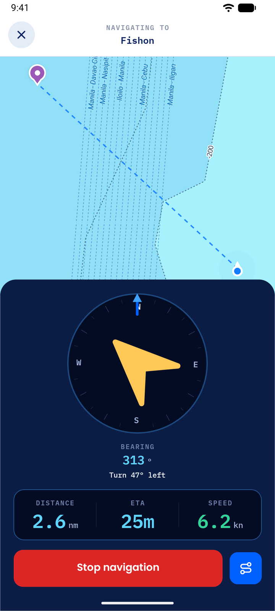
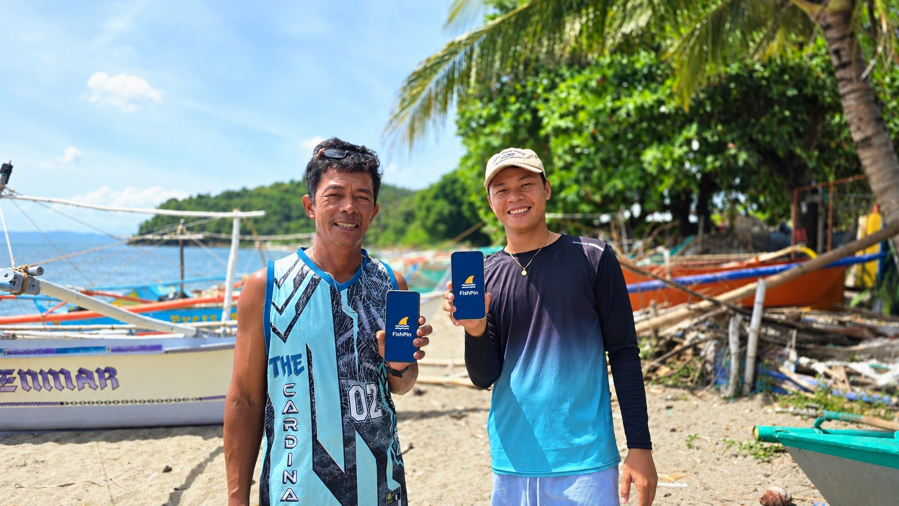

Sea chartsthat work withno signal.
Offline marine navigation for Filipino municipal fishermen.

The problem · Brgy. B. del Mundo, Mansalay
of about fishermen
own a GPS.
The other navigate by memory and landmarks.
to for a marine GPS plotter
No signal at sea, and other apps need one
Fisherfolk poverty incidence: (PSA, ), second highest of all basic sectors.




The solution
The phone he already owns.
Now a marine GPS.
- Sea chart with Philippine depths
- Save a spot, navigate back
- Trip recording, screen off
- Anchor-drag alarm
- AI fish ID
- One-tap SOS to family
Proof, not promise
Airplane mode.
Still navigating.
Keeps working
- Sea chart (downloaded)
- GPS position
- Saved spots
- Trip recording
- Navigation
- Catch logbook
- Fish guide
Waits for a connection
- Weather forecast
- AI fish ID
- Map downloads
- Cloud backup

Built for Philippine waters
Our seas. Our words.
local fish names in languages, across species
Philippine depth chart
Built into the app, so depth shows with no signal.
Anchor-drag alarm
Rings even on silent if the banca drifts.
SOS with load codes
Texts to contacts, with the borrow-load code for Globe, Smart or DITO.
Status of implementation
Not a plan.
Already live.
accounts on Google Play
as of

With the grants so far
Business model
Pay once.
Own it.
one-time · after a -day free trial
- No subscription. A monthly bill is the first thing dropped when the catch is poor.
- GCash, Maya, card or load, paid through Google Play.
What navigation costs over five years
Apps: yearly price for five years. Plotter: one-time hardware.
FishPin costs less than over five years.
Market
A
market.
- TAM municipal fishermen ×
- SAM smartphone ownership (assumption)
- SOM paid users by year three
Mansalay southern Oriental Mindoro MIMAROPA Visayas, Bicol
Go-to-market
Start at home.
Grow town by town.
Financial projection · year one
Total investment
| Provincial grant | |
| Regional grant | |
| My counterpart of it in kind |
Honest math.
Still viable at licences: ROI, payback